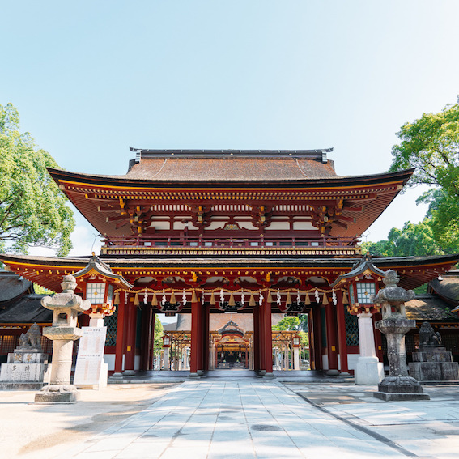

Fukuoka
Welcome to My Home Town!
Fukuoka is where I, Isshin Kishi, grew up, and it's one of Japan's largest cities. Located in southern Japan, Fukuoka is a thriving port city. With its relatively warm climate and the vibrant energy of its port district, it's one of Japan's most dynamic and energetic places!
